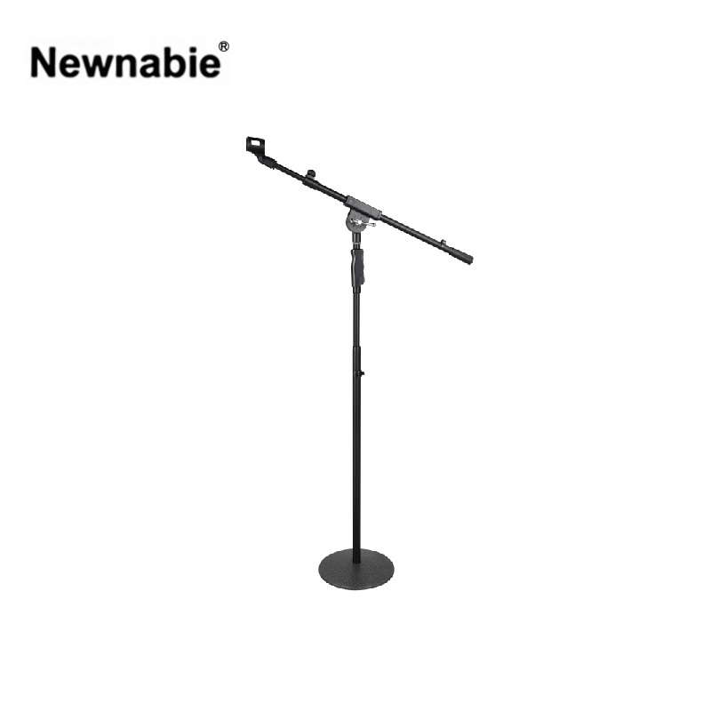

Newnabie NB-739T는 원형 라운드 베이스(Round Base)와 원터치그립 높이 조절을 결합한 붐 마이크 스탠드입니다. 트라이포드 베이스 대비 바닥 공간을 덜 차지하는 라운드 베이스는 좁은 무대·연단·강의실에 이상적이며, 원터치그립 구조로 한 손으로 신속하게 높이를 조정할 수 있습니다.

원형 라운드 베이스와 원터치그립 높이 조절을 결합한 붐 마이크 스탠드. 연단·강의실·교회 등 좁은 공간의 고정 설치에 이상적입니다.
NB-739T는 트라이포드 다리가 아닌 원형 라운드 베이스 구조를 채택해, 발 밑 공간에 다리가 튀어나오지 않습니다. 연단 근처를 왕래해야 하는 사회자·강사·설교자가 발에 걸리지 않고 편안하게 이동할 수 있는 설계입니다. 본체 중량 4.55 kg의 무게감 있는 베이스는 스탠드가 넘어지는 것을 방지하며 단일 마이크 기준 흔들림 없는 안정성을 제공합니다.
높이 조절은 원터치그립 한 손 조작 방식으로, 그립을 쥐면 즉시 높이가 풀리고 놓으면 고정됩니다. 850–1500 mm 높이 범위와 570–1000 mm 텔레스코핑 붐으로 선 자세 보컬과 강연 포지션을 모두 커버합니다.
| 모델명 | NB-739T (T 타입 · T-Bar 있음) |
|---|---|
| 타입 | Round Base Boom Mic Stand (One-Touch Grip) |
| Height | 850 – 1500 mm (원터치그립 높낮이 조절) |
| Boom (T-Bar) Length | 570 – 1000 mm (텔레스코핑) |
| Material | Steel |
| Net Weight | 4.55 kg |
| 권장소비자가 | 72,600 원 / 개 (VAT 포함) |
※ 본 사양 · 단가는 수입원(현대에이브이씨) 2026-01-01 스탠드 가격표 기준입니다. 'T' 접미사는 상단에 T-Bar(붐)가 있는 제품을 의미하며, T-Bar가 없는 형제 모델로 NB-739I가 별도 있습니다.